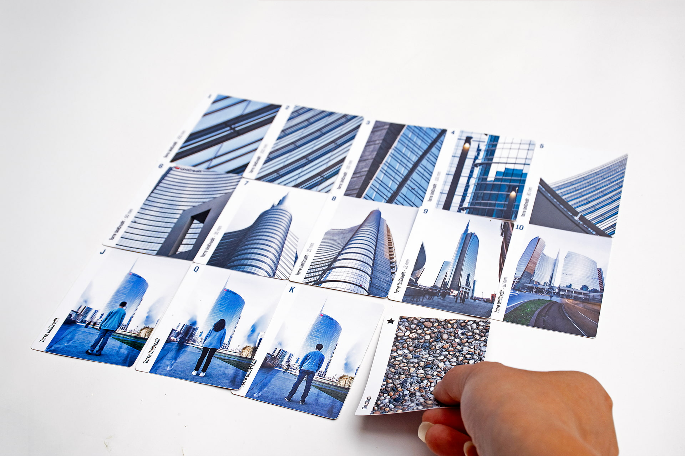
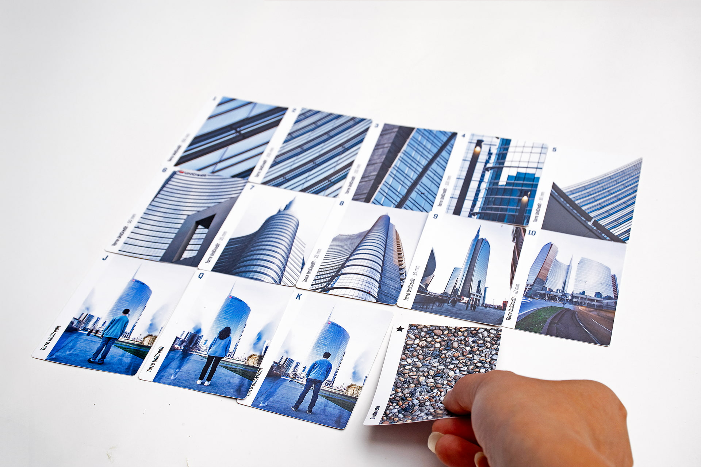

About
The Building Colour card deck captures and conveys the essence of
Milan through photographs of its most iconic buildings: the Duomo,
Castello Sforzesco, UniCredit Tower, and Hadid Residences.
"Building Colour" represents both the shades of the city's
architecture and the process of color creation. Each suit follows a
scale that moves from detail (No. 1, 250 mm) to a broader
perspective (No. 10, 10 mm).
The face cards – Jack, Queen, and King – are portrayed from behind
in long exposure shots. The Jokers feature an emblematic element of
Milan’s streets: the cobblestone. The back of the cards displays a
pattern of photographic details. The cross-opening box easily
transforms into a playing surface for outdoor fun.

 
